1. Sistemes de fitxers, particions i recuperació
1.1 Fonaments teòrics d'emmagatzematge
Per comprendre com s'emmagatzema la informació en un ordinador, és fonamental diferenciar la disposició del maquinari de la gestió que en fa el sistema operatiu:
- Arquitectura física: Fa referència als components materials i la distribució real de les dades al mitjà físic. En els discos durs mecànics (HDD), les dades es graven en plats magnètics dividits en cilindres, pistes, capçals i sectors. En canvi, les unitats sòlides (SSD) s'organitzen mitjançant cel·les de memòria flash distribuïdes en pàgines i blocs, sense cap mecanisme mòbil.
- Arquitectura lògica: És l'esquema conceptual que configura el sistema operatiu sobre el suport físic per fer-lo utilitzable. Engloba la delimitació de particions o volums, l'establiment del sistema de fitxers i l'assignació de la unitat mínima de treball lògica (blocs o clústers).
1.2 Esquemes de particionat: MBR davant de GPT
Abans de poder formatar i utilitzar qualsevol unitat, cal determinar quin tipus de taula de particions s'hi aplicarà:
| Característica | MBR (Master Boot Record) | GPT (GUID Partition Table) |
|---|---|---|
| Origen i estàndard | Disseny tradicional vigent des de 1983. | Format modern vinculat als sistemes amb UEFI. |
| Capacitat màxima | Limitat a 2 TB per unitat de disc. | Admet més de 9,4 ZB (Zettabytes). |
| Particions admeses | Fins a 4 particions primàries (o 3 primàries i 1 estesa amb lògiques). | Permet fins a 128 particions primàries (en entorns Windows). |
| Fiabilitat i redundància | Manca de còpia de seguretat; si es corromp el sector d'arrencada es perd l'accés. | Inclou còpies de seguretat al final del disc i comprovacions de redundància cíclica (CRC). |
1.3 Unitats d'organització: Particions, Volums i Blocs
- Partició: Secció o divisió lògica independent delimitada dins d'una mateixa unitat física de disc.
- Volum: Estructura lògica d'un nivell superior que permet flexibilitzar l'espai, podent fusionar particions que pertanyen a diferents discos físics (mitjançant eines com LVM o RAID per programari).
- Sector (512 bytes): Unitat física mínima d'emmagatzematge establerta pel fabricant al disc dur.
- Bloc o Clúster (4096 bytes per defecte): Unitat mínima d'assignació lògica que empra el sistema de fitxers. Per defecte, un bloc lògic agrupa 8 sectors físics:
8 sectors × 512 bytes = 4096 bytes (1 bloc)
1.4 Desperdici d'espai i fragmentació
La fragmentació representa la pèrdua de rendiment o el desaprofitament de l'espai d'emmagatzematge:
- Fragmentació interna: Ocorre quan la mida d'un fitxer no omple el bloc assignat sencer (per exemple, un arxiu de 100 bytes en un bloc de 4096 bytes en desaprofita 3996). Es pot minimitzar reduint la mida del bloc en formatejar.
- Fragmentació externa: Es produeix quan els arxius es desglossen en fragments dispersos pel disc dur a causa de la manca d'espai contigu. Això alenteix la lectura mecànica i es resol executant eines de desfragmentació per reordenar els blocs.
1.5 Nivells de formateig i sistemes de fitxers
Un sistema de fitxers és l'estructura que permet al sistema operatiu gestionar, cercar, llegir i escriure dades sobre una partició. La seva preparació o formateig pot ser de tres tipus:
- Formateig de baix nivell: Realitzat a la fàbrica del disc; estableix físicament les pistes i els sectors, esborrant les dades de manera irreversible.
- Formateig de mig nivell: Defineix la taula de particions (MBR/GPT) i comprova si hi ha sectors malmesos.
- Formateig d'alt nivell: Aplicat pel sistema operatiu per esborrar l'estructura anterior i generar el nou sistema de fitxers. Cal ressaltar que en un formateig d'alt nivell ràpid només s'elimina la taula d'índexs, de manera que la informació roman físicament al disc fins que és sobreescrita per dades noves.
1.6 Pràctica de particionat, formateig i muntatge de discs (/dev/sdb)
Part 1. Particionat amb fdisk
Inspecció inicial de les unitats d'emmagatzematge detectades al sistema:
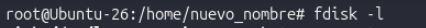
Informació detallada del disc dur secundari de 25 GB (/dev/sdb):
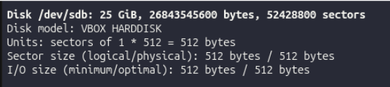
Creació d'una nova partició primària usant l'eina fdisk:
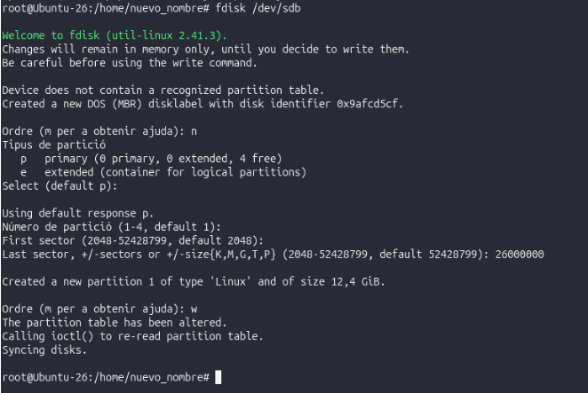
Verificació de la taula de particions MBR/DOS actualitzada (/dev/sdb1):
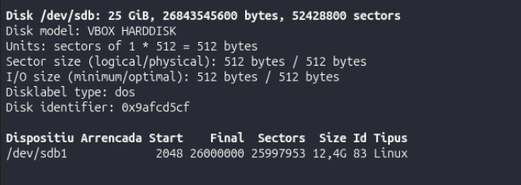
Part 2. Formateig i muntatge manual
Formateig en ext4 establint una mida de bloc personalitzada de 2048 bytes (2k):
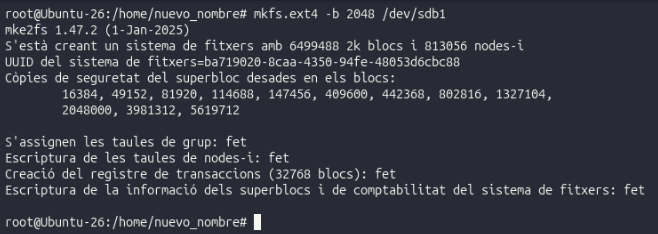
Comprovació de la mida del bloc lògic i superblocs amb tune2fs:
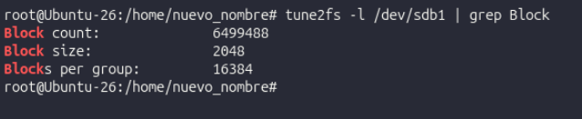
Creació del directori /mnt/particio1 com a punt de muntatge:
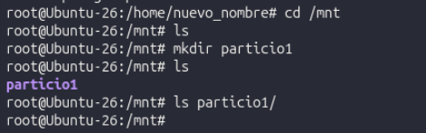
Muntatge explícit de la partició ext4:
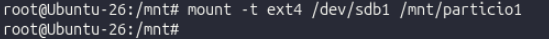
Creació de directori i arxiu de prova dins de la partició:
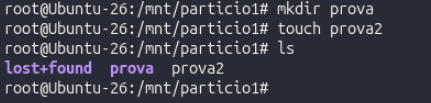
Desmuntatge de seguretat de la partició:
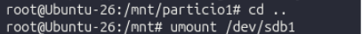
Part 3. Verificació i muntatge persistent (/etc/fstab)
Comprovació de l'estat del directori abans de muntar:
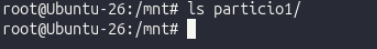
Muntatge i verificació de la capacitat i sistema de fitxers amb df -hT:
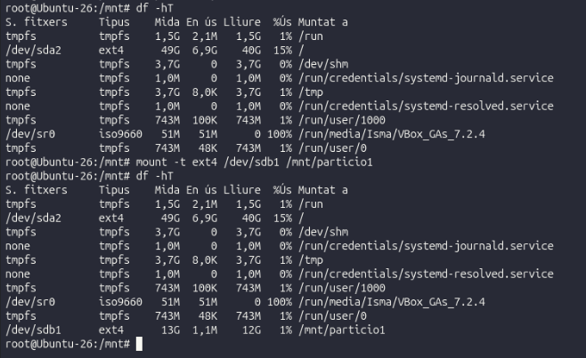
Obtenció de l'identificador únic UUID de la partició amb blkid:
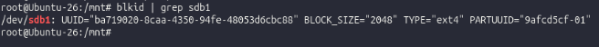
Edició del fitxer /etc/fstab per establir el muntatge automàtic en l'arrencada:
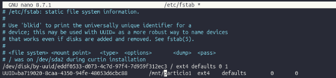
Verificació final del muntatge persistent i del contingut de la partició:
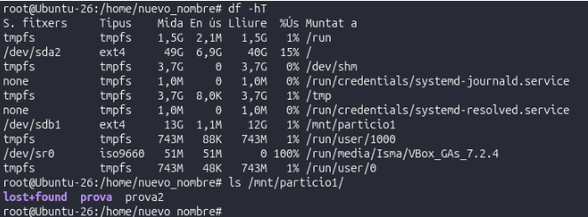
1.7 Pràctica de recuperació de fitxers després d'un formateig
Pas 0. Preparació de l'entorn
Instal·lació de l'eina de recuperació testdisk (que inclou photorec):
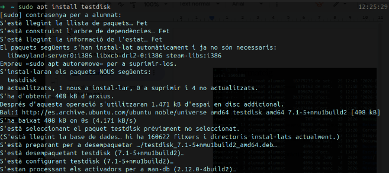
Creació i accés a la carpeta de treball ~/practica:
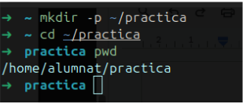
Creació del fitxer de text de prova notes.txt:
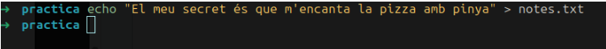
Verificació del contingut de la carpeta:
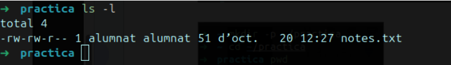
Part 1. Creació del disc virtual
Generació d'un disc virtual de 200 MB omplert amb zeros mitjançant l'ordre dd:
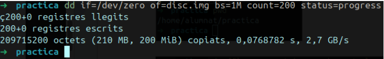
Comprovació de la mida i creació del fitxer d'imatge disc.img:
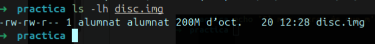
Part 2. Formateig del disc i emmagatzematge de dades
Aplicació d'un sistema de fitxers ext4 sobre la imatge de disc:
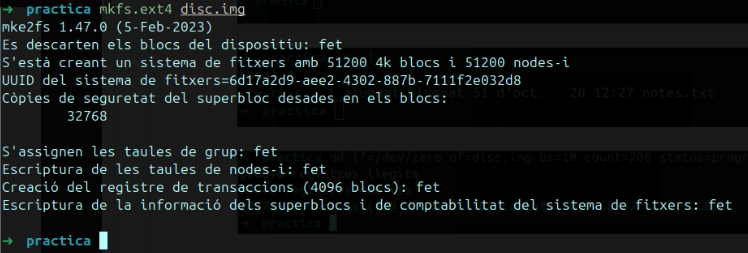
Creació del punt de muntatge /mnt/prova i muntatge del disc virtual:
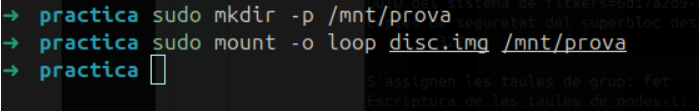
Còpia dels fitxers de prova (imatge, PDF i text) al directori de muntatge:
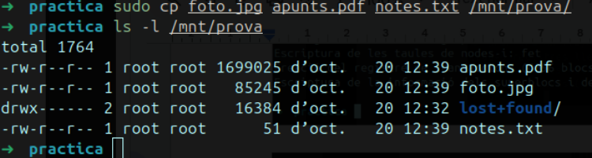
Càlcul i desat del hash SHA-256 dels fitxers originals com a empremta digital:
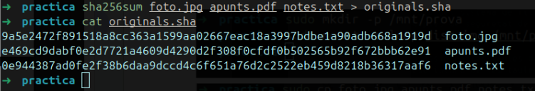
Part 2.5 i Part 3. Formateig d'alt nivell
Desmuntatge del disc virtual abans d'aplicar el nou formateig:
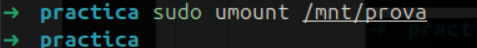
Formateig d'alt nivell conservant les dades al disc (opció -E nodiscard):
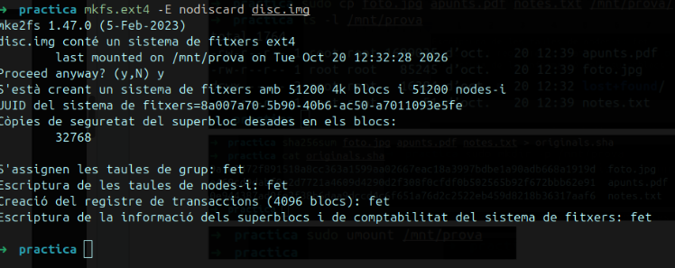
Comprovació del disc aparentment buit (només conté la carpeta lost+found):
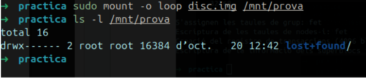
Segon desmuntatge del disc virtual per iniciar la fase de recuperació:
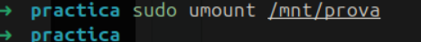
Part 4. Recuperació de fitxers amb PhotoRec
Execució de l'eina photorec per escanear l'estructura de la imatge de disc:
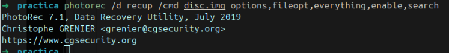
Llistat dels fitxers recuperats a la carpeta recup.1:
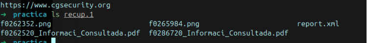
Comprovació i comparació dels valors hash SHA-256 entre els fitxers originals i els recuperats:
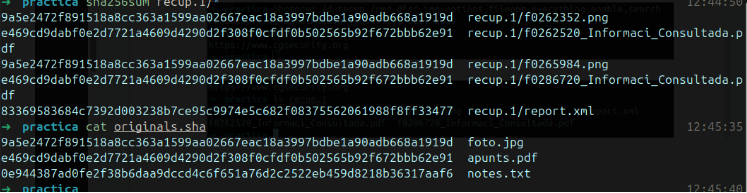
Recuperació del text contingut al fitxer unstructurat notes.txt mitjançant l'extracció de cadenes amb strings i grep:
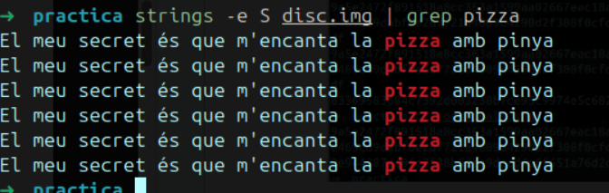
Part 5. Esborrat de baix nivell, comprovació final i neteja
Sobreescriptura completa de la imatge de disc amb zeros fent servir dd (formateig de baix nivell):
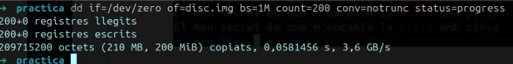
Verificació que photorec ja no troba cap fitxer recuperable després de l'esborrat físic:
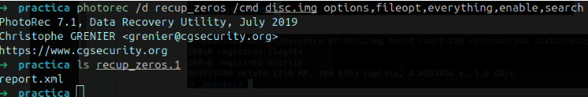
Comprovació que la cerca amb strings i grep tampoc no retorna cap resultat:
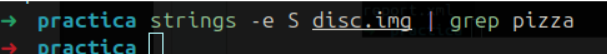
Neteja dels fitxers temporals, discs virtuals i carpetes de recuperació creades durant la pràctica:
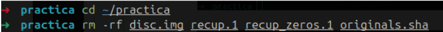
Qüestionari de la pràctica de recuperació
-
Després de la part 3, el disc semblava buit. On eren realment els teus fitxers?
El disc semblava buit però no ho estava, ja que el que hem fet ha sigut eliminar l'estructura del sistema de fitxers, però les dades dels fitxers encara romanien físicament al disc.
-
Per què els fitxers recuperats tenen noms diferents dels originals?
Perquè el nom de l'arxiu es guarda a la taula d'índexs del sistema de fitxers. En esborrar-la,
photorecno pot conèixer el nom original i assigna a cada fitxer un número segons la posició del disc on l'ha trobat. -
Com pots demostrar que la foto recuperada és exactament la mateixa que l'original?
Comparant el valor de la seua empremta digital o hash SHA-256 (generat prèviament amb
sha256sum), comprovant que coincideix byte a byte amb l'original. -
Per què
photorecha trobat la foto i el PDF, però no elnotes.txt? Com l'has trobat igualment?Perquè els fitxers de text pla (
.txt) no tenen una capçalera o signatura fixa com les imatges o els PDF. L'hem trobat directament buscant la seua informació al disc amb l'ordrestrings, ja que es troba escrita en text pla. -
Quin nivell de formateig has fet a la part 3 i quin a la part 5?
A la part 3 s'ha realitzat un formateig d'alt nivell (reconstrucció del sistema de fitxers sense esborrar dades) i a la part 5 un formateig de baix nivell (sobreescriptura completa del disc amb zeros).
-
Vols vendre un USB on tenies fotos personals. Quin formateig faries abans de vendre'l i per què?
Faria un formateig de baix nivell per assegurar-me que es sobreescriuen totes les dades amb zeros i així evitar que ningú puga recuperar les meues fotos privades amb eines d'auditoria.